Design Build Fly
Banner Deploy and Release for 2025-26 AIAA Design Build Fly Competition
Every year, the Design Build Fly competition held by the American Institute of Aeronautics and Astronautics introduces a final special mission worth double points, and is the difference between placing in the Top 50 and the Top 20 of 100 teams.
Aside from assisting with carbon-fiber layups, cutting the wing, and creating fuselage features, I led this year's special mission team: designing a fuselage attachment that deploys a banner from behind the plane and releases the banner to the ground. What made this project even more difficult was that due to our limited resources and small team, we couldn't afford to test our banner before the competition in case it broke our plane. It had to work on the first try.
Before even thinking about the deployment attachment, I focused on the banner itself. How would we roll up the banner? What are the physics of the banner in flight? How do we prevent the banner from being caught in the tail?
Here I actually took inspiration from the design of a toilet paper/paper towel roll: rolling the banner toward the leading edge instead of around it would free the banner smoothly in flight. It's like dropping a paper towel while holding it from the first paper except wind is the gravity.
Roll-out test
Unrolling toward the leading edge, tested with a pencil standing in for the carbon rod.
After researching actual banner-flying planes used for advertisements, I noticed that the string attachment from the fuselage to the leading edge of the banner is more than the length of the fuselage itself. Also, it is always similar to a kite, a knot in the string forming a triangle with the leading edge. In addition to removing any pieces of entanglement, that was how we were going to get the banner as far from the plane as possible.
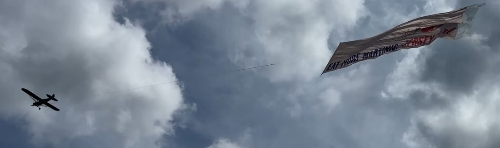
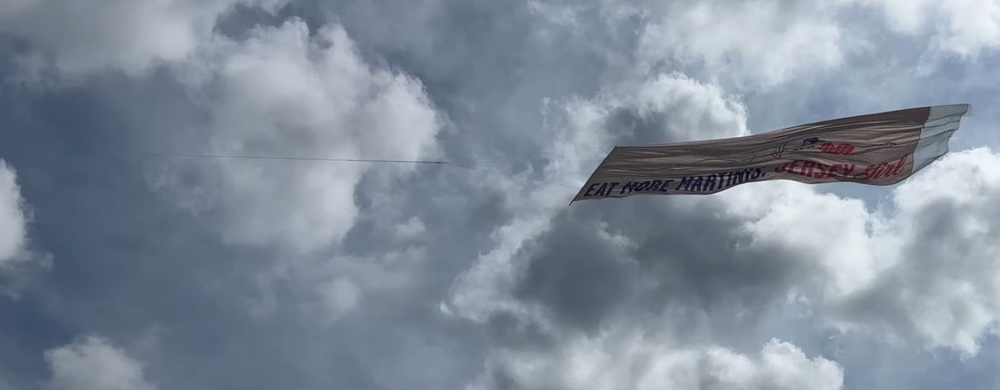
It may be hard to see but there is a point in the string that diverges into consecutive lines going towards the banner leading edge.
Now, I would need to focus on the mechanical challenge of deploying and releasing the banner with as minimal electronic input and assembly parts as possible. In fact, before I devised how the banner would go from its rolled-up state to flying, I tried to make sense of how it releases from inside the fuselage. I designed a bracket with a pin controlled by a servo motor inside the fuselage, where the banner string would form a fish hook or ring around the pin to fly from and that string easily slides off when the pin shifts to the side.
Version 1 — too many parts
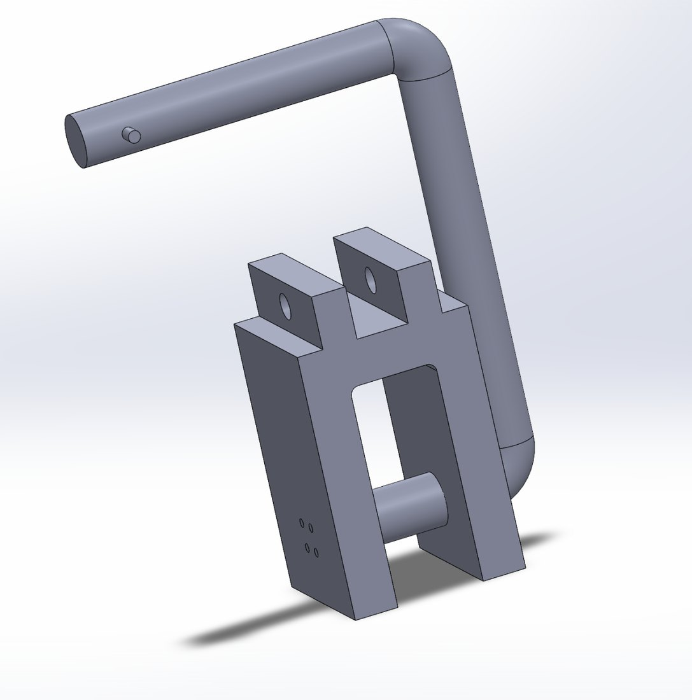
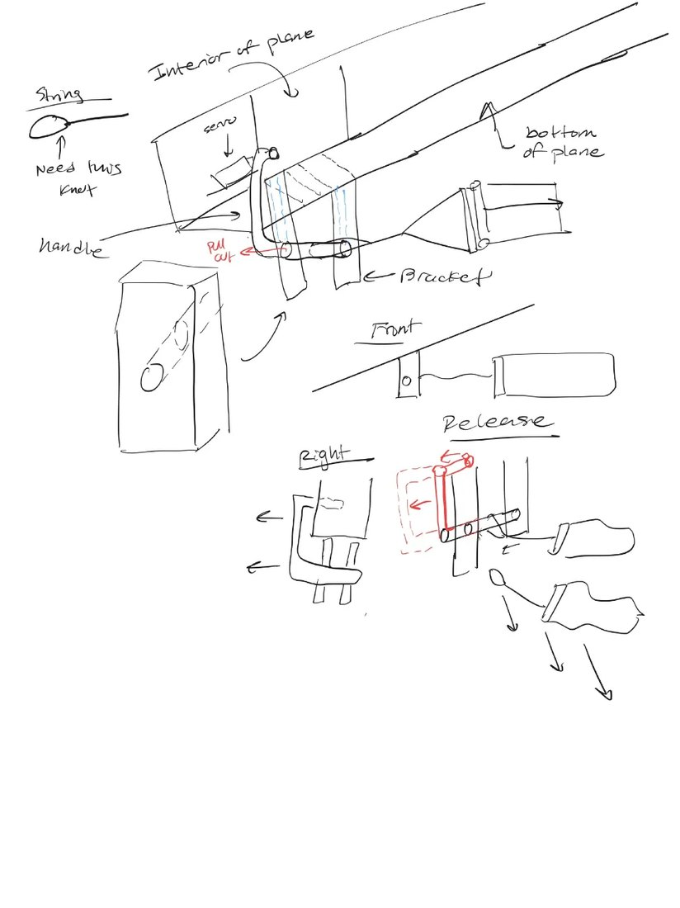
When I showed this design to the senior engineer, I was instantly met with the pin being too structurally complex. His words were clear: Always simplify as much as you can. Then, I shifted back to the first task of actually dropping the banner for it to fly. I reimagined the position of the servo motor and the pin, creating a housing for the servo, while a smaller, horizontal push rod extending from the servo arm becomes the pin. Another fixed rod holds the banner from a rubber band that wraps around and attaches at the push rod; when the rod shifts, banner falls.
Version 2 — too structurally weak, high bending, introduced risk of rubber bands
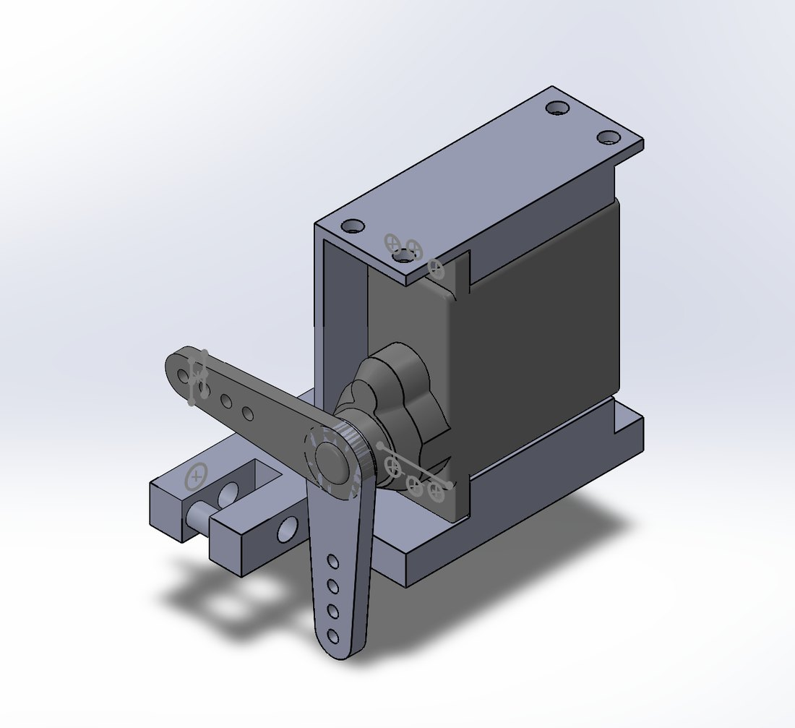
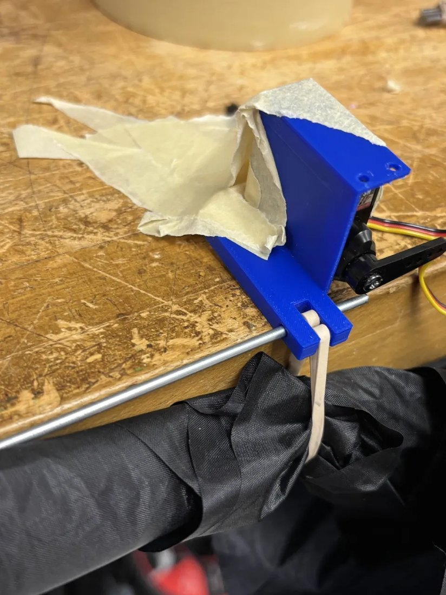
First drop test
While the servo motor fit inside the mount as a press fit, the rubber band was too stiff and thick for the banner to fall. This material I'm testing with is ripstop nylon, known to be fray-free and heavily durable in high-speed wind conditions. However, the rubber and ripstop nylon surfaces produce significant frictional forces, preventing a smooth fall.
To reduce bending, I flipped the design so the servo motor rests horizontally, and there's a sharp chamfer at the two lugs that hold the rods. It also appeared that having an identical mount in the center of the banner means the banner string can attach at that point in the same fishing hook fashion while the other mount toward the front of the banner drops it into a rolling motion. A cup at the end supports the banner during flight but lets the banner drop at an angle when the first servo motor releases it.
Version 3
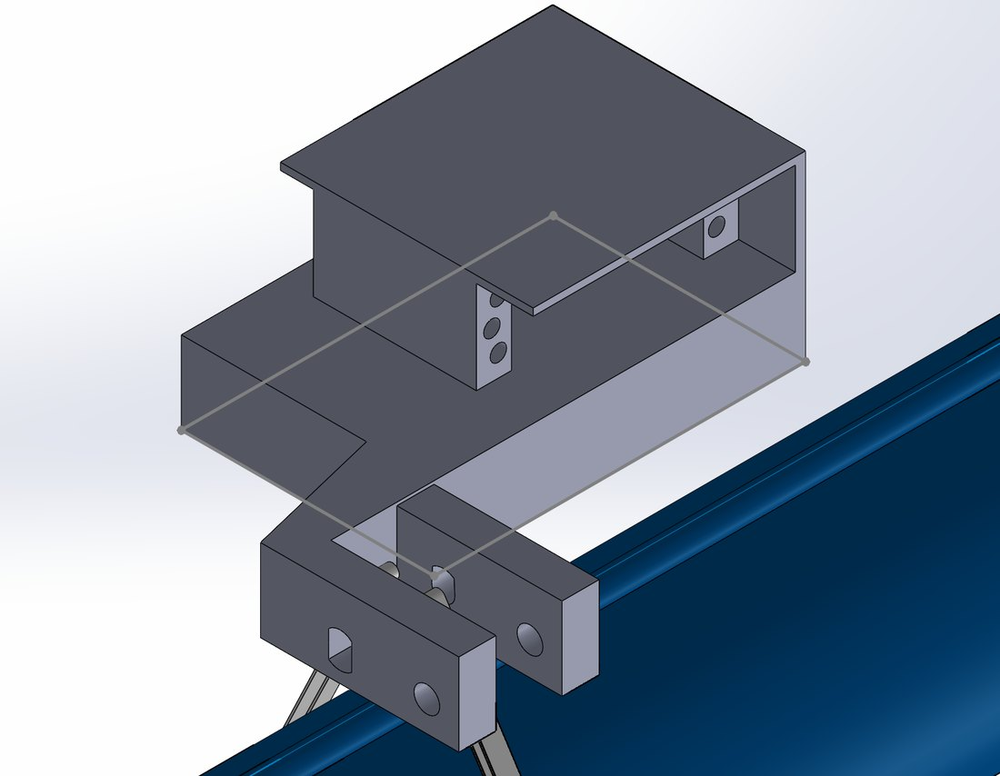
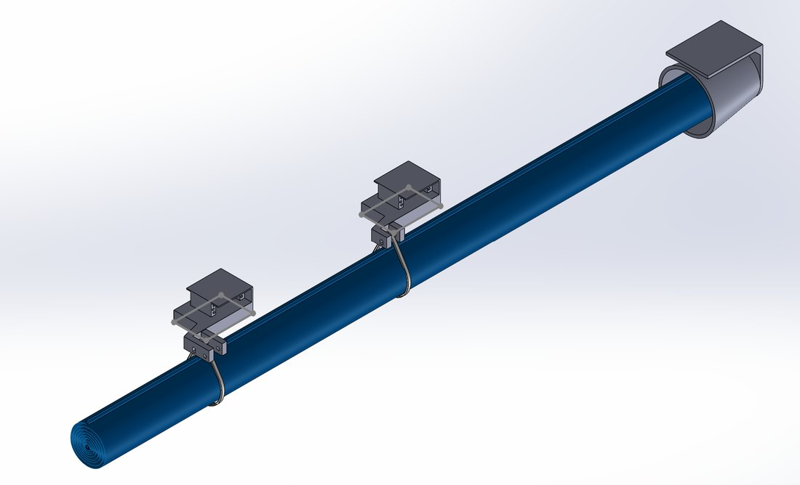
With the help of a senior member in our group, we also took feedback from a previous snap-fit design to create the snap-fit mechanism that would help attach the servo motor mount to the interior of the fuselage. We replaced rubber bands with strings. We were ready for testing.
Final Version
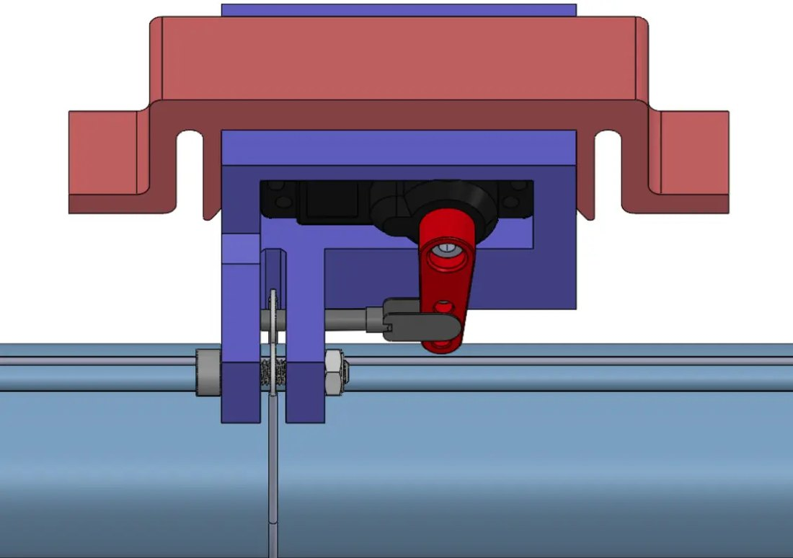
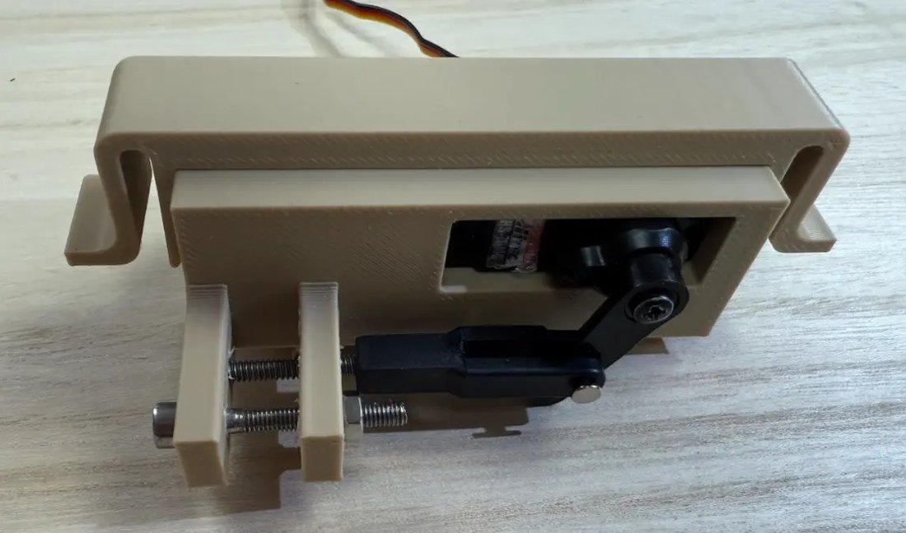
Most importantly, I rigorously tested the hole size in the lugs to ensure the push rod would never get stuck in between them or fail to enter the holes if they were too small. I had to redesign the holes in different geometries and sizes about five times for me to get it right.
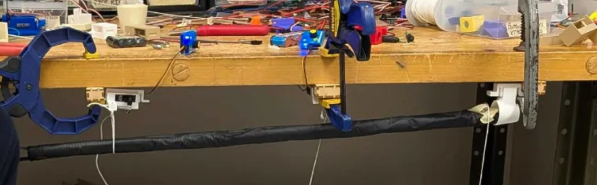
Drop test with the end cup
It appeared, however, that the circular cup holder was the weed in our banner assembly stack, with the banner leading edge getting stuck inside it. As long as we could hold the banner tightly during flight, we wouldn't require additional support. In order to do so, we only slightly redesigned the servo mount to have both a deploy and release section (3 lugs). The servo moves halfway to deploy, and completely out to release. This way, we could support the banner from the same positions but at two points, and still release from the center.
In the final plane, we incorporated zip ties to reduce the friction with the ripstop nylon and create a tighter fit around the banner.
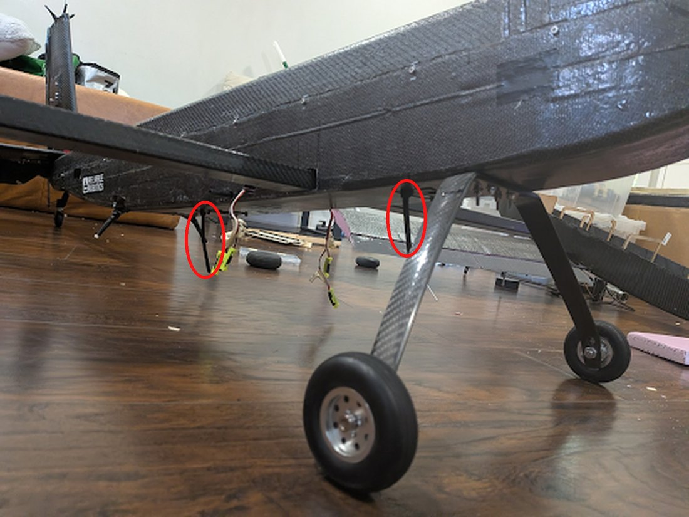
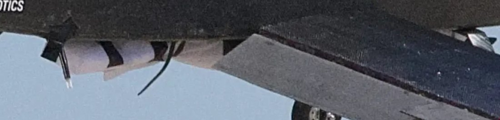
After several more additional tests under the plane to ensure the banner at least drops, we could confirm that the string or banner itself would never get stuck on any part of the plane. The final steps were on me to build the banner leading edge using a carbon fiber rod, which one of our members stitched the banner around, and I had also knotted the string to create a triangle that wraps through the inside of the rod. We added about five weights to the bottom of the banner such that the leading edge would stay vertical during flight and drop-out.
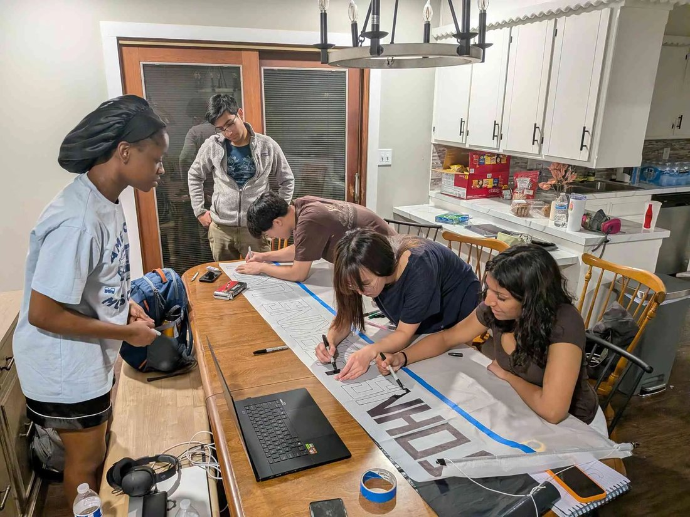
Ground Mission
Please take the time to view my participation in the ground mission, where I pilot the controls to move the push rod in the correct positions for my teammate to install the banner (hooking the lead string and hooking the zipties). You'll notice at the end that the banner drops smoothly when we hold the plane vertical; I make the input on the controller.
Banner installation
Release, plane held vertical
Fly-Off
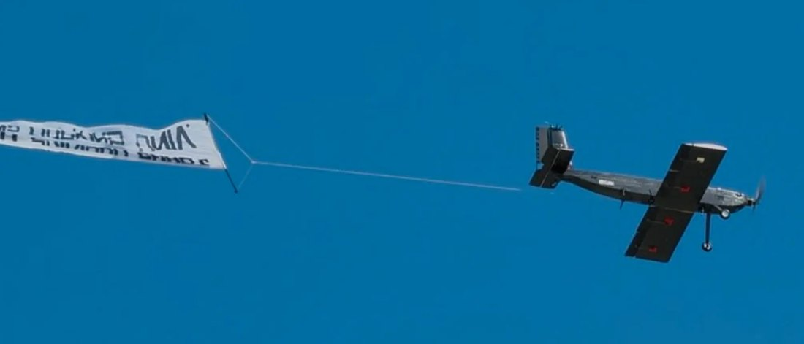
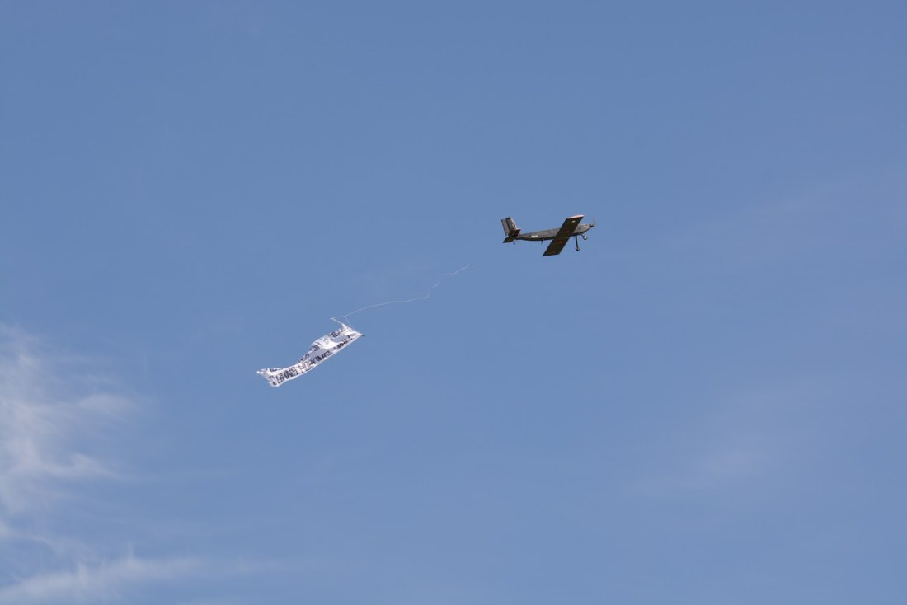
Deploy and release of banner in actual competition!